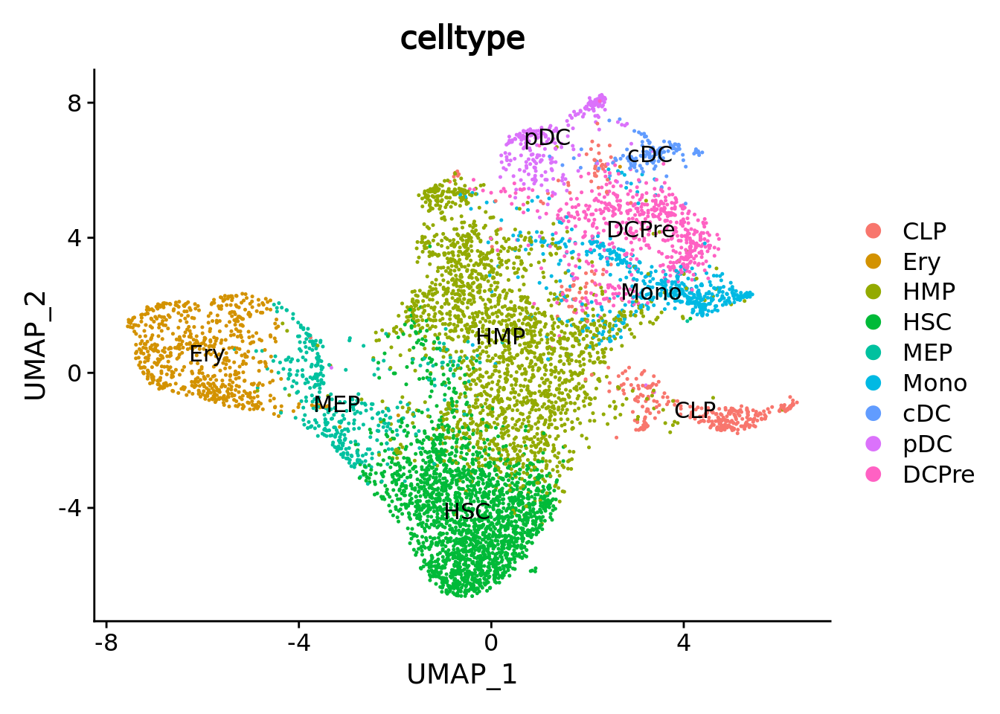
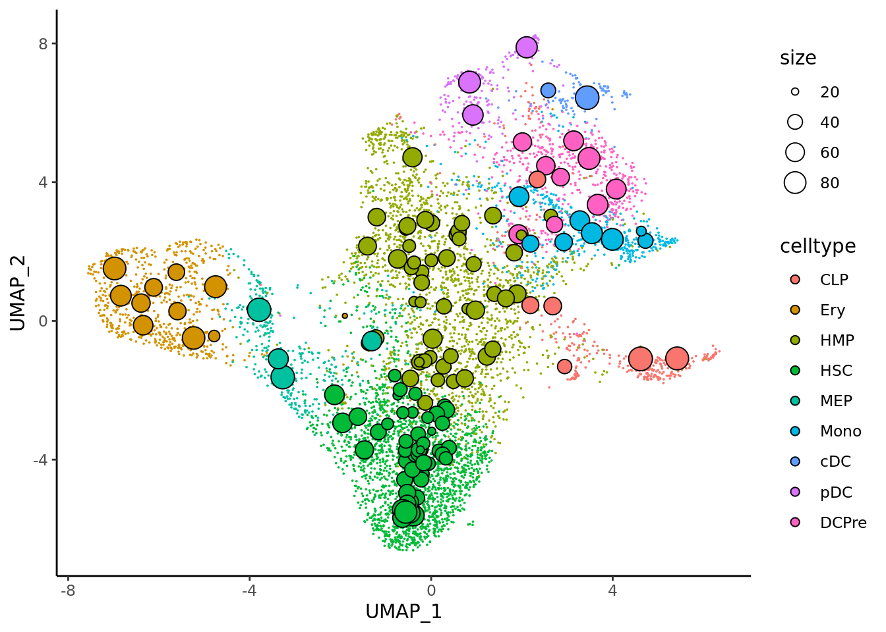
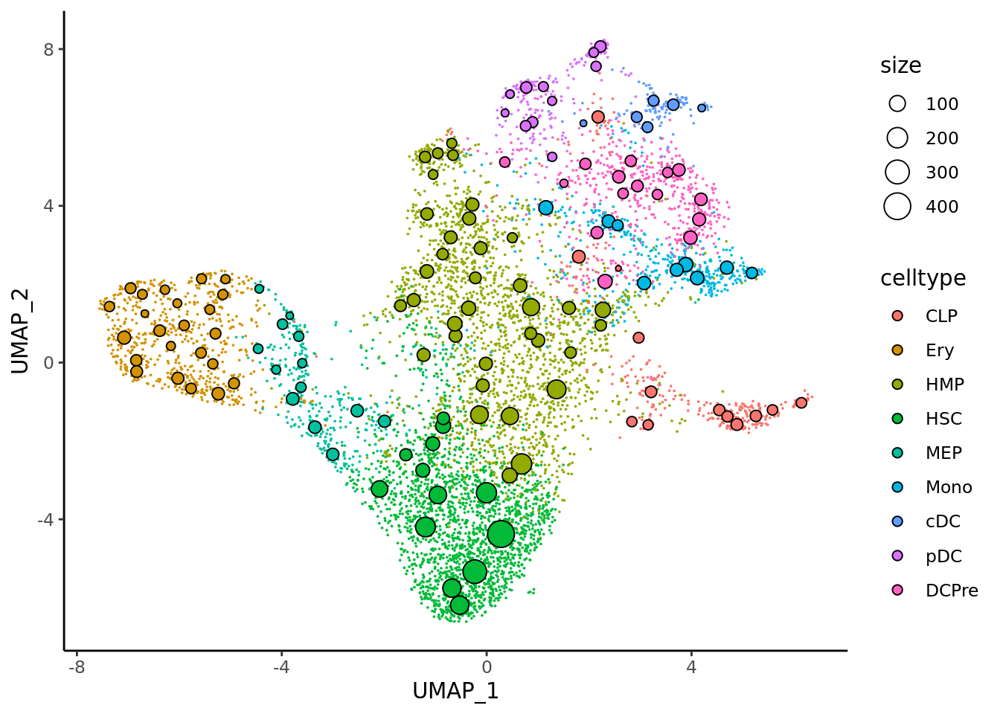
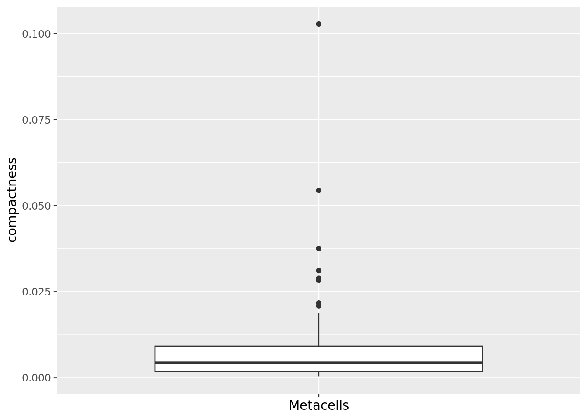
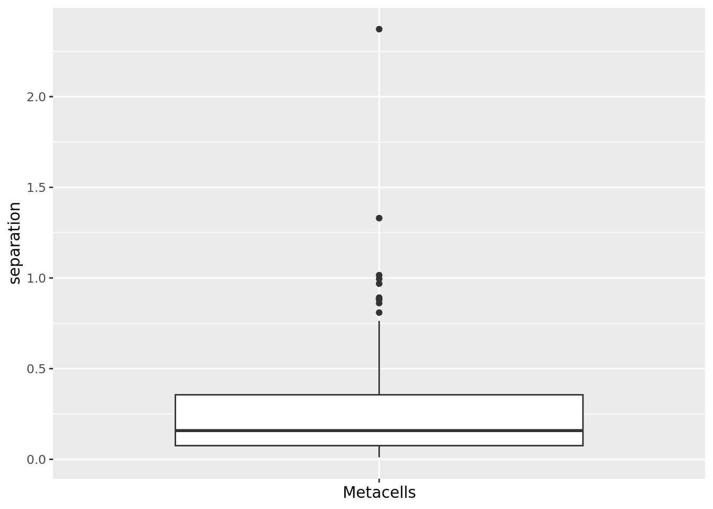
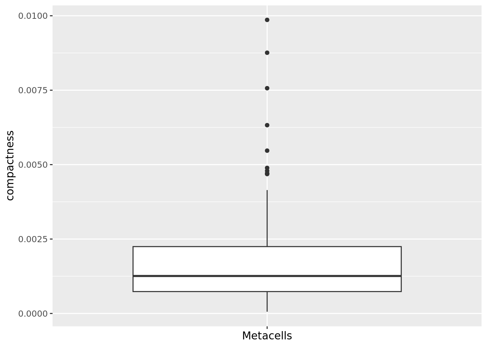
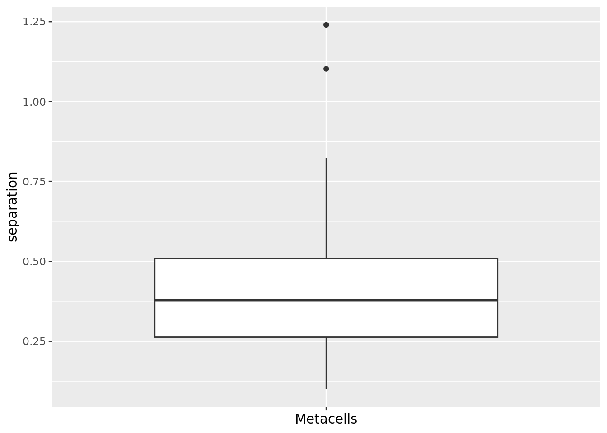
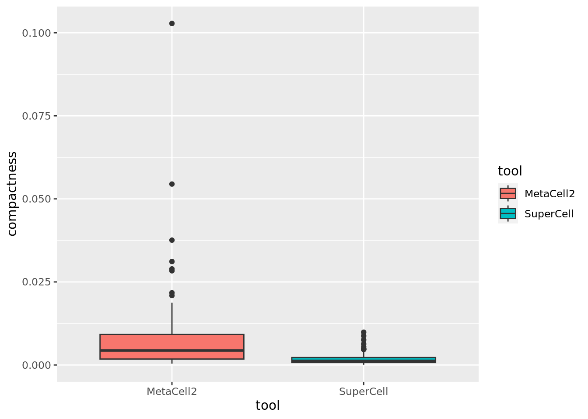
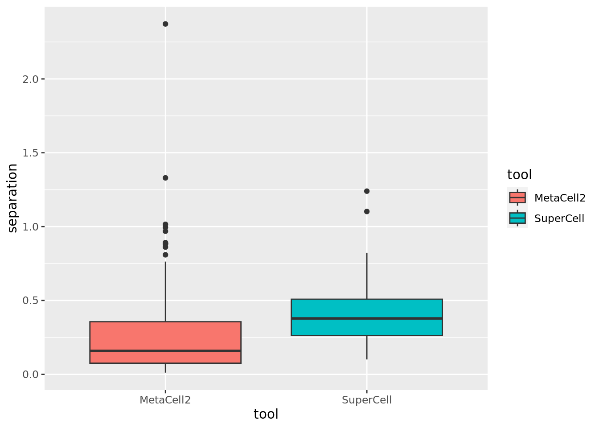
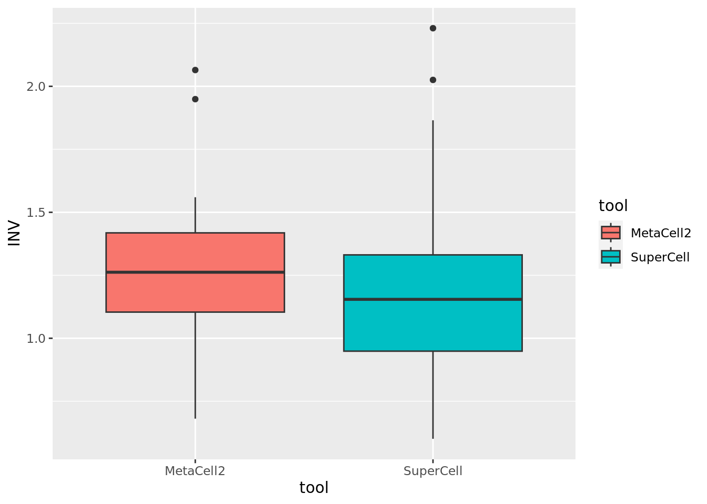

5.8 Loading single-cell data
First we need to load the single cell data and make a classical dimentionality reduction analysis.
cd34.singlecells <- read_h5ad("data/CD34/cd34_multiome_rna.h5ad")
cd34.singlecells <- CreateSeuratObject(counts = Matrix::t(cd34.singlecells$X),meta.data = cd34.singlecells$obs)
cd34.singlecells <- NormalizeData(cd34.singlecells)
cd34.singlecells <- FindVariableFeatures(cd34.singlecells)
cd34.singlecells <- ScaleData(cd34.singlecells)
#> Centering and scaling data matrix
cd34.singlecells <- RunPCA(cd34.singlecells)
#> PC_ 1
#> Positive: NKAIN2, MEIS1, CRHBP, INPP4B, CALN1, CHRM3, AVP, PCDH9, GPC5, PRKG1
#> ANGPT1, MECOM, MIR99AHG, PRKG2, PBX1, PRKCH, SKAP1, PREX2, ZNF385D, THRB
#> IL12A-AS1, RBPMS, HLF, LIMCH1, LINC01122, ST8SIA6, TMEM163, MED12L, CABLES1, PDZD2
#> Negative: DIAPH3, POLQ, RRM2, ASPM, TUBB, MKI67, TOP2A, CIT, TUBA1B, BRIP1
#> NUSAP1, CLSPN, ATAD2, SHCBP1, H2AFZ, STMN1, TMPO, KIF15, NCAPG2, DTL
#> CENPF, GTSE1, KNL1, PCLAF, HMGN2, ACTB, UHRF1, ZNF367, MELK, AURKB
#> PC_ 2
#> Positive: PLCB1, NEGR1, PRKCE, AFF3, ATP8B4, SAMHD1, CD44, UBE2E2, MPO, PTPRE
#> TTC7A, FLT3, ARHGAP26, GAS7, VIM, RELL1, AKAP13, RAB11FIP1, RUNX2, HDAC9
#> PLD4, ADGRE5, SLC8A1, KLF6, IRF8, SFMBT2, CD74, RBM47, GAB2, SDK2
#> Negative: ANK1, RYR3, XACT, ITGA2B, APOC1, EEF1A1, TFR2, CPB1, KLF1, RPS3
#> APOE, PTH2R, RPL7A, KCNH2, RPS6, BLVRB, FAM178B, KEL, ZNF385D, GATA1
#> ADAMTS3, SLC40A1, RPS5, EEF1B2, RPS3A, RPL13A, CSF1, RPL8, CNRIP1, HBD
#> PC_ 3
#> Positive: CD74, HLA-DRA, HLA-DRB1, FAM160A1, ACTG1, JCHAIN, EEF1A1, HLA-DPA1, ARL4C, TGFBI
#> BLNK, TMSB4X, SPIB, PLXNA4, RPL13A, LGMN, CORO1A, RPS5, SCT, RPS3
#> RNASE6, RPS3A, LIME1, CUX2, ADAM19, PLD4, CST3, IRF7, CARD11, RPL28
#> Negative: AZU1, FNDC3B, ELANE, MPO, LRMDA, PRTN3, KCNQ5, LYST, AFF2, SLC22A15
#> F13A1, EREG, CFD, PLPPR3, ATP8B4, ZEB2, PCBP3, PDE3B, IL1RAP, ACSM3
#> ZNF804A, CSF3R, SLC39A11, PLD1, DENND4A, ANXA1, CTSG, RREB1, TFRC, DGKG
#> PC_ 4
#> Positive: SPINK2, CALN1, PLCB1, INPP4B, NKAIN2, ANGPT1, ATP8B4, CHRM3, MEIS1, DIAPH3
#> PHGDH, MIR924HG, SMIM24, MDK, TOP2A, CSF3R, ASPM, C1QTNF4, KIF15, TYMS
#> PRKCH, NUSAP1, TUBA1B, RRM2, CIT, TK1, CDCA5, POLQ, NDC80, AURKB
#> Negative: SAMHD1, CD36, SULF2, ANK1, FAM160A1, TGFBI, CST3, RYR3, RAB11FIP1, S100A6
#> APOC1, XACT, IRF8, RNASE6, FCER1G, PLXNA4, LYZ, CPB1, APOE, UGCG
#> FAM178B, GPR183, CSF2RB, RBM47, PIK3R5, MPEG1, CUX2, MICAL2, SLC8A1, CYBB
#> PC_ 5
#> Positive: MECOM, PCDH9, PRKG1, ASPM, PLXDC2, THRB, SKAP1, PHTF1, ZNF385D, PRKG2
#> SETBP1, PBX1, GPC5, LIMCH1, TOP2A, MED12L, MKI67, GTSE1, ELL2, PTK2
#> PREX2, CENPE, AURKB, CRHBP, DNM3, KIF18B, NUSAP1, HLF, CIT, DIAPH3
#> Negative: GAPDH, RPS19, IGLL1, RPLP0, C1QTNF4, RPL28, RPL13A, RPL18A, RPS24, EEF1A1
#> GYPC, PRSS57, RPLP2, SMIM24, RPS8, RPL35, MIR181A1HG, RPS3, RPL27A, RPL14
#> RPL7, RPS6, RPL6, RPL8, RPL32, RACK1, ACTG1, RPL29, RPS3A, RPL7A
cd34.singlecells <- RunUMAP(cd34.singlecells,dims = c(1:50))
#> 12:15:21 UMAP embedding parameters a = 0.9922 b = 1.112
#> 12:15:21 Read 6881 rows and found 50 numeric columns
#> 12:15:21 Using Annoy for neighbor search, n_neighbors = 30
#> 12:15:21 Building Annoy index with metric = cosine, n_trees = 50
#> 0% 10 20 30 40 50 60 70 80 90 100%
#> [----|----|----|----|----|----|----|----|----|----|
#> **************************************************|
#> 12:15:21 Writing NN index file to temp file /tmp/35395114/RtmptFIlEg/file14f2014f1bb643
#> 12:15:21 Searching Annoy index using 1 thread, search_k = 3000
#> 12:15:23 Annoy recall = 100%
#> 12:15:23 Commencing smooth kNN distance calibration using 1 thread with target n_neighbors = 30
#> 12:15:24 Initializing from normalized Laplacian + noise (using irlba)
#> 12:15:24 Commencing optimization for 500 epochs, with 293954 positive edges
#> 12:15:32 Optimization finishedPlot single cell data.
UMAPPlot(cd34.singlecells,group.by = "celltype",label = T) ## Visualization of metacells in single-cell space
Now we can plot metacells from MetaCell2 in the single-cell space.
mc_projection(
sc.obj = cd34.singlecells,
mc.obj = cd34.metacell,
cell.membership = cd34.metacell@misc$membership,
sc.reduction = "umap",
sc.label = "celltype", # single cells will be colored according the sc.label
metacell.label = "celltype" # metacells cell will be colored according the metacell.label
) + theme_classic()
And same for metacells obtained with SuperCell.
mc_projection(
sc.obj = cd34.singlecells,
mc.obj = cd34.supercell,
cell.membership = cd34.supercell@misc$cell_membership,
sc.reduction = "umap",
sc.label = "celltype", # single cells will be colored according the sc.label
metacell.label = "celltype" # metacells cell will be colored according the metacell.label
) + theme_classic() ## Compactness and separation
We can compute the compactness and separation of the metacells from the single cell pca.
With the mc_compactnness we can use the approach of SEACells by computing these metrics in a diffusion map obtained from the pca.
First for MetaCell2 metacells
cd34.metacell$compactness <- mc_compactness(cell.membership = cd34.metacell@misc$cell_membership, sc.obj = cd34.singlecells,
sc.reduction = "pca", n.components = 50, diffusion.components = T)
#> Computing compactness ...
qc_boxplot(mc.obj = cd34.metacell, qc.metrics = "compactness")
cd34.metacell$separation <- mc_separation(cell.membership = cd34.metacell@misc$cell_membership, sc.obj = cd34.singlecells,
sc.reduction = "pca", n.components = 50, diffusion.components = T)
#> Computing separation ...
qc_boxplot(mc.obj = cd34.metacell, qc.metrics = "separation") Same for metacell obtained with SuperCell.
cd34.supercell$compactness <- mc_compactness(cell.membership = cd34.supercell@misc$cell_membership, sc.obj = cd34.singlecells,
sc.reduction = "pca", n.components = 50, diffusion.components = T)
#> Computing compactness ...
qc_boxplot(mc.obj = cd34.supercell, qc.metrics = "compactness")
cd34.supercell$separation <- mc_separation(cell.membership = cd34.supercell@misc$cell_membership, sc.obj = cd34.singlecells,
sc.reduction = "pca", n.components = 50, diffusion.components = T)
#> Computing separation ...
qc_boxplot(mc.obj = cd34.supercell, qc.metrics = "separation") ## Inner normalized variance (INV) We can compute the INV for the MetaCell2 and SuperCell metacells as defined in MetaCell paper.
cd34.supercell$INV <- mc_INV(cell.membership = cd34.supercell@misc$cell_membership, sc.obj = cd34.singlecells)
#> Computing INV ...
cd34.metacell$INV <- mc_INV(cell.membership = cd34.metacell@misc$cell_membership, sc.obj = cd34.singlecells)
#> Computing INV ...Comparison of MetaCell2 and SuperCell for compactness (lower the better).
cd34.metacell$tool <- "MetaCell2"
cd34.supercell$tool <- "SuperCell"
data.metrics <- rbind(cd34.metacell@meta.data[,c("tool","INV","compactness","separation")],
cd34.supercell@meta.data[,c("tool","INV","compactness","separation")])
ggplot(data.metrics,aes(y=compactness,x=tool,fill = tool)) + geom_boxplot() Comparison of MetaCell2 and SuperCell for separation (higher the better).
ggplot(data.metrics,aes(y=separation,x=tool,fill = tool)) + geom_boxplot()
Comparison of MetaCell2 and SuperCell for INV (lower the better).
ggplot(data.metrics,aes(y=INV,x=tool,fill = tool)) + geom_boxplot()